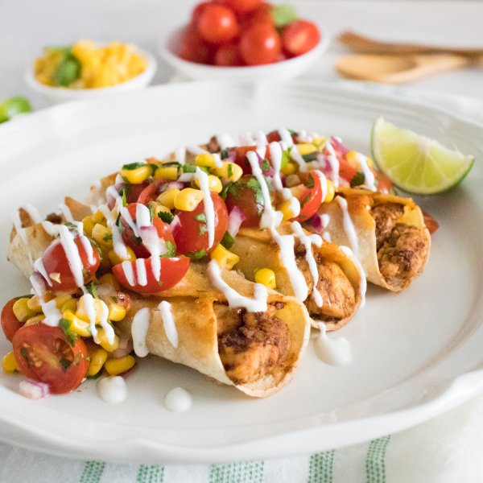

Cheesy Chicken Taquitos with Pico de Gallo Corn Salad & Yogurt Crema

Total Time
35 min
Nutrition (per serving)
695.5 kcalCalories
57.9 gProtein
59.4 gCarbs
27.1 gFat
Full nutrition table
| Calories | 695.5 kcal |
| Total fat | 27.1 g |
| Saturated fat | 8.3 g |
| Trans fat | 0.4 g |
| Cholesterol | 155.2 mg |
| Sodium | 328.2 mg |
| Carbohydrates | 59.4 g |
| Fiber | 9.2 g |
| Sugars | 7.6 g |
| Protein | 57.9 g |
| Potassium | 1264.2 mg |
| Calcium | 346.8 mg |
| Iron | 4.5 mg |
| Vitamin A | 1063.1 IU |
| Vitamin C | 28.3 mg |
| Vitamin D | 8.5 IU |
Cookware
Ingredients
- ½ (8 oz) blockcheddar cheese
- 1 ½ lbchicken breasts, boneless skinless
- 1 small bunchcilantro
- 2 cupsfrozen corn
- 1 pintgrape tomatoes
- 2limes
- ⅔ cupplain Greek yogurt
- 1 mediumred onion
- 12small corn tortillas
- chili powder
- cumin, ground
- extra virgin olive oil
- garlic powder
- salt
Steps
- Preheat oven to 425°F.
- Preheat a skillet over medium-high heat.
- While the skillet heats up, pat chicken dry with paper towels and place on a cutting board. Cut chicken into bite sized cubes.1 ½ lb chicken breasts, boneless skinless
- Once the skillet is hot, add oil and swirl to coat the bottom. Add chicken to the skillet and season with spices. Stir-fry until golden brown and cooked through, 4-5 minutes. Remove from heat.2 tbsp extra virgin olive oil
4 tsp chili powder
4 tsp cumin
2 tsp garlic powder
1 tsp salt - Meanwhile, warm tortillas in another skillet, oven, or microwave (optional), 15-30 seconds.12 small corn tortillas
- Coarsely grate cheddar.½ (8 oz) block cheddar cheese
- Coat a large sheet pan with a thin layer of oil to prevent sticking.2 tsp extra virgin olive oil
- Fill tortillas with chicken and cheese. Roll tightly and place seam-side down on the sheet pan. Place in the oven and bake until golden and crispy, 10-12 minutes.
- Meanwhile, wash and dry the fresh produce.1 pint grape tomatoes
1 small bunch cilantro
2 limes - Place corn in a colander and run under cold water to thaw. Pat dry with paper towels and transfer to a large bowl.2 cups frozen corn
- Using a clean cutting board, halve tomatoes. Peel and small dice onion. Shave cilantro leaves off the stems; discard stems and mince leaves. Add everything to the bowl with the corn.1 medium red onion
- Juice one lime into the bowl with the corn, season with salt, and toss to combine the salad.½ tsp salt
- Juice the other lime into a medium bowl, add yogurt, and whisk to combine the crema.⅔ cup plain Greek yogurt
- To serve, divide taquitos between plates, top with pico de gallo salad, and drizzle with yogurt crema. Enjoy!